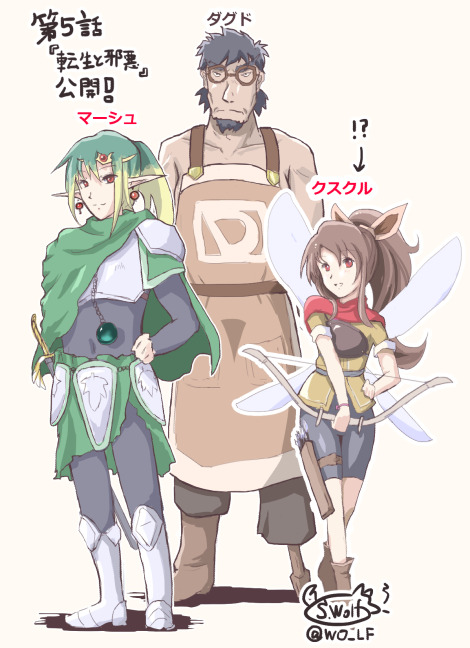
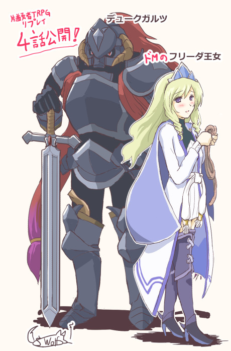
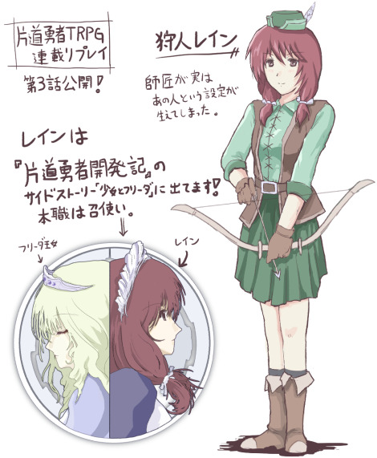
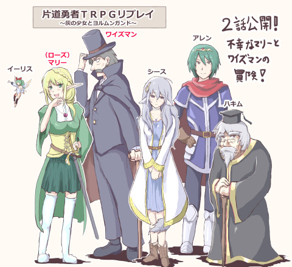
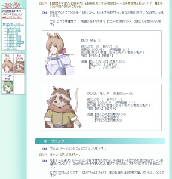
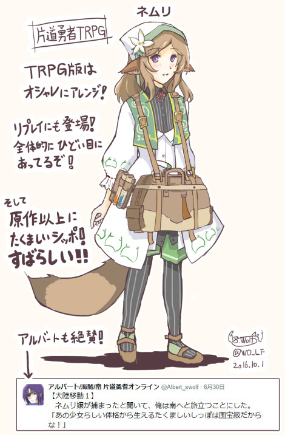

シルバーセカンド開発日誌
2016年10月
■
2016-10-29 (土) 片道勇者TRPG 17 第5話▼【片道勇者TRPG 17 第5話公開！】
毎週恒例、片道勇者TRPGリプレイ連載更新！
第5話 『転生と邪悪』掲載です！
片道勇者TRPGリプレイ
『灰の少女とヨルムンガンド』公式ページ
今回のPCはクスクル、マーシュ、ワイズマン！
マーシュって誰？ と思われるかもしれませんが、
実は剣士マリーが勇者と合体し、なんと男性化したもの！
マリーの【ゼヌーラ】が見られると思っていた皆さんは
ぜひ残念がってください！！
そしていつも読んでくださっている皆さま、本当にありがとうございます！
第5話の新メンバー！

それにしてもゲームに比べると、TRPGリプレイのようなテキストコンテンツを
読まれる方ってそこまで多くはいらっしゃらないかな、
という感触なんですが、逆に一人あたりの熱量や
人気投票の勢いはすさまじいですね！
一週間で90数件も人気投票コメントが来るなんてそうそうありませんよ！
おかげさまでモチベーション高く続けられています、本当に嬉しい限りです。
何はともあれ、そろそろ本業の再開の時期です！
ウディタの大量のバグ修正も進めつつ、
時間を見つけて次のゲームのプロトタイプをいろいろ作り始めたいですね！
自分好みの色んなジャンルのゲームを一通り作ってみたいというのが
私の夢なので、次も新しいジャンルに挑戦してみたいです。
以下は気になった拍手コメントです、いつも皆さまありがとうございます！
＞半獣人の耳が４つある設定いいですね。例えが悪いかもしれませんが、
＞ホラーゲームとかの設定資料集にある、人間がクリーチャーになる図とか
＞大好きなのでこういうの好きです。空想科学っぽいというか。.
そう言っていただけると幸いです。
何もかも都合がいいわけじゃないという設定が個人的に好きかもしれません。
（片道勇者TRPG連載リプレイのマンガを描いてくださった方へ）
＞ご迷惑でなかったら息抜きの折にでもPLの皆さんとご笑覧いただければ幸いです。
ウオオありがとうございます！ PLの皆さんと共有させていただきました！
ドコモさんちの倫理規定で下着が載せられないのでここで直接紹介するのは
控えさせていただきますが、PLの方も私も大喜びでした。
もし公開ページなどございましたらぜひリンクさせていただきます！
PLの方から感想コメントが届きましたので以下に掲載させていただきます。
＞クスクルより
ありがとうございます、絵があるとより一層クスクルの行動は
毎度ながら酷いですね。酷すぎる。つまりもっと酷ければお城の女子更衣室（？）や、
頑丈で逞しいロングブレイドも描かれるということですね！？
高い塀を飛び越え、狭い隙間をすり抜けられるようになった高機動型クスクルなら、
そんな場面に居合わせても不思議じゃない。よーし頑張るぞー。なのよー。
＞マリーより
マリーを味のある人間味で描いてくださって本当にありがとうございます、
読んでいてすごく楽しめました……！ 他のキャラとの掛け合いとかも、
こうしてマンガで見るとひとしお……別の味わいがあります！
連載などされる予定はｺﾞﾎｯｺﾞﾎ。続きなどあれば大変楽しみです……！！
すごく面白かったです、ありがとうございました！
＞片道勇者ストラップ、ようやく購入できました＆手元に届きましたー！
＞原作イメージそのままに可愛らしくデフォルメされていて、デザインされた方、
＞ネムリンに引き続き本当に良いお仕事してらっしゃるー！
＞最初はフリーダ王女だけを購入するつもりでいたのですが、
＞開発記を読んだら、イーリスも一緒にいさせてあげたい
＞と激しく思うようになり、結局ふたつ買ってしまいました。 .
おお二つも！ ストラップのお買い上げありがとうございます！
そして開発記も読んでくださってありがとうございます！
フリーダ王女とイーリスをセットで
買ってくださる方が他にもいらっしゃるようで、
お話をよく覚えてくださっているんだなあとうれしくなってしまいます。
そんな『片道勇者ストラップ』はこちらから！
皆さまのおかげで、黒字化まであと30％くらいのところまで来ています。
よければぜひどうぞ！ ■
2016-10-22 (土) 片道勇者TRPG 16 第4話▼【片道勇者TRPG 16 第4話公開！】
今週も片道勇者TRPGリプレイ連載の第4話 『王女と獣』、公開です！
片道勇者TRPGリプレイ
『灰の少女とヨルムンガンド』公式ページ
今回のPCはロリア、クスクル、ワイズマン！
ドＭのフリーダ王女も登場して展開はますますカオスに！
ぜひお楽しみください！
徐々にPCの皆さんがこなれてきたり、
なつかしのNPCが個性ましましで登場したりと
ここからさらに面白さが加速していきます。たぶん。
いつも読んでくださっている皆さま、本当にありがとうございます！

なおカクヨムでは次回分が日曜日20時頃より先行配信されていますので、
早く読みたい方や、外での細切れの時間で
見たい方などはぜひこちらもどうぞ！
片道勇者TRPGリプレイ『灰の少女とヨルムンガンド』カクヨムページ
【ウディタの修正中！ ８％】
最近は新刊『片道勇者TRPGプラス』関係のお仕事と並行して、
空いた時間でWOLF RPGエディターの修正を行っています。
次回の更新で、大量に残っているバグの修正に加え、
16：9ゲーム解像度対応や、チップサイズと画面解像度を
別々に設定する機能などを搭載予定です。
更新履歴に残らない分（新機能実装時の副作用で発生した問題）も含めると
100点くらい超えそうでなかなか大変そうです。ぼちぼち片付けています。
以下は気になった拍手コメント返信です。
皆さま、いつもありがとうございます！
＞リプレイを読んでると片道TRPG面白そうでやってみたい気になりますね！
＞相手がいれば…そう、相手がいれば……… .
そうなんですよねー、お友達を用意するのが大変！
いちおう有志の方や公式で開催してださっているコンベンションなどにいけば
知らない人とTRPGを遊ぶことはできるんですが、実際のところ、
いきなり知らない人とTRPGを遊ぶのって私みたいな内気タイプな人にとっては
かなりハードルが高い気がするので、そういう人は身近に遊べる人がいないと
なかなか辛いゲームである気がしています。
＞4人プレイの方が会話的に面白いんじゃ…。と思いましたが、3×3マップだから
＞必ずどこか一ヵ所単独行動の経験値がもらえない組ができてしまうんですね。
＞世界観がガラッと変わって面白い！次回が既に待ちきれないです！ .
読んでくださってありがとうございます！
4人でなく3人の理由ですが、片道勇者TRPGは1マス分ずつ処理していくゲームなので、
オンラインセッションで4人プレイだと一部の人の待ち時間がすごく伸びてしまう、
という問題の方を避ける目的のほうが大きいです。
オンラインなら、できれば最大PL3人くらいを推奨したいですね。
あと、GM入れた話者が4→5人に増えるとリプレイ編集の手間が
1.5倍くらいになってしまうので、
その点でもやれる範囲におさめたという意味が大きいです。
というのも、経験的にオンラインセッションのリプレイ編集に使う思考力は
（GMを含めた）全話者の数の二乗に比例する感じがしているからです。
同じテキスト量でも、3人なら3x3＝9点、4人なら16点、
5人なら25点の重み、という感じですね。
自家製のときは最大7人で推定49点の重みだったので、編集が大変でした。
PL3人なら4x4＝16でその1/3くらいの思考力で済むので、
おかげさまで私は今回だいぶ楽ができたように思います。
リプレイ作成の際は、そのあたりも考慮すると楽になるかもしれません。 ■
2016-10-15 (土) 片道勇者TRPG 15 第3話▼【片道勇者TRPG 15 第3話公開！】
と、いうことで今週も片道勇者TRPGリプレイ連載の第3話、公開です！
今回は、謎の世界に引き込まれてしまったPCたちの新たな冒険が始まります。
ここからがこのキャンペーンの真骨頂、お楽しみに！
片道勇者TRPGリプレイ
『灰の少女とヨルムンガンド』公式ページ
片道勇者世界はループしている都合上、「生き死に」が非常に軽いので
ちょっと過激な演出もできて、その点は便利だなーと思いました。
一生服が着られなくなる強化魔法を使っても、
次のループでは元に戻りますしね！
なお、第3話ではもう魔王の出番はありません。
せっかくなのでリプレイ用に描いた魔王の落書きを掲載！

魔王のデザイン、だいたいこんな感じだったと思います。
ＲＰＧのキャラの露出度が常に低い私の場合、
まず描かないデザインだったのでいい刺激になりました。
本当にこんなに過激なの！？とお思いの方は
モタさんの魔王イラストが載ってるページ(記事消失)も
あるのでよければぜひご確認ください！
【片道勇者開発記よりレイン参戦！】
リプレイ第3話では、『片道勇者開発記』の
サイドストーリー「少女とフリーダ」より、
フリーダの友人、レインが参戦します！

『片道勇者開発記』のサイドストーリーは全編ほぼまじめ展開でしたが、
劇中の見えないところで、実はレインがひどい師匠に
師事していたことがリプレイ第3話で判明します。
皆さんのＰＣがレインの師匠になってくださっても全く構いませんので、
公式キャラはお好きなようにお使いください！ 片道並列世界に正史なし！
（でも妖精イーリスとレインはたぶん共存が難しいかも）
なお『片道勇者開発記 ～四年の旅路～』は、
片道勇者の開発で悩んだことや、
開発中断からの思いがけない復活、そしてコンシューマ展開や
ボツネタやサイドストーリーなどなど、片道勇者にまつわる
様々なお話を記した電子ブックです。もしよければ、この機会にぜひどうぞ！
定価は500円（税込）となっております。
『片道勇者開発記 ～四年の旅路～』公式サイト
「ゲーム版」と、下の「Kindle版」があります（上の画像はゲーム版）。
すぐスマホなどで読みたい人は↓
『片道勇者開発記 ～四年の旅路～』Kindle版
（Androidスマホ、iPhone、iPad、Windowsで見られます）
以下は気になった拍手コメント返信です。
皆さま、いつも暖かいコメントありがとうございます！
（リプレイ第2話へのコメント）
＞全体的に主に失敗によりブラッディですが、今回も面白かったです！
＞ドジっ子マリーと変態紳士ワイズマン、噛み合わない魔王の活躍で
＞今回も濃いセッションでした。そろそろ全員集合でしょうか？ 4人が
＞集まったらどうなるのか想像もつきません。果たしてゲームマスターの
＞HPは大丈夫なのか？楽しみにしています！ .
おおおテキストコンテンツなのに
しっかり読んでくださってありがとうございます！
第3話からは全員集合！ 過酷な世界の冒険が始まります。
出目以外の面ではＧＭの想定ルートから外れることがない、という意味で、
『片道勇者ＴＲＰＧ』は初めてのＧＭさんにも
向いてるルールかなと感じています。
意外と楽なんですよ。
普通のＴＲＰＧだと<自家製>みたく脱線しまくりだったり
想定外ルートに行きまくりということがよくあるので、
そういう意味では初めてのＴＲＰＧとして『片道勇者ＴＲＰＧ』に
触れていただくのはおすすめです。
ＴＲＰＧが気になっている皆さまは、よければぜひ！ ■
2016-10-08 (土) 片道勇者TRPG 14 第2話▼【片道勇者TRPG 14 第2話公開！】
片道勇者TRPGリプレイ『灰の少女とヨルムンガンド』、第2話が公開！
人気投票は来週の10/13終日頃まで！ 人気投票を送りたい方はお早めに！
基本的に投票時期が早いほど掲載率が高くなります。
片道勇者TRPGリプレイ「灰の少女とヨルムンガンド」公式ページへ

今回のＰＣは耳長人の剣士（ローズ）マリーと、詩人のワイズマン！
この二人、中身は<自家製>片道勇者TRPGの
サントリナさんとンクさんなんですが、
その頃から出目がふるわないのは相変わらず！
その不運が今回どう出るか、ご期待ください！
以下はワイズマンの中の人からの紹介コメントです。
ワイズマンの中の人：
どうも、詩人ワイズマンのプレイヤーです。
サイコロを二個振って、
最悪に近い数字が出なければ嬉しいなというイベントがあったとしましょう。
しかも二回振り直せるとしましょう。
うまくいくはずですよね。うまくいくはずなんですけどね。
そんなリプレイです。
気になる人はいますぐこちらの2話をどうぞ！
↓
片道勇者TRPGリプレイ
「灰の少女とヨルムンガンド」公式ページへ
【ところで今なにやってるの？】
今はリプレイの最終調整と、
それと並行してウディタの海外展開の対応に追われています！
私のゲームじゃないんですが、
すでに発売済みのゲームに問題が出ているわけで
なるべくすばやい対応が求められる状態です。
『片道勇者』のSteam版は、色んなバグりどころを
ウディタ開発者ならではの知識と勘で
無理矢理リリースできるようにすり抜けていましたが、
自分以外の人はそうではないので
しばらくマニュアル作りなどに奔走することになりそうです。
PLAYISMさんちはウディタ作品の
ローカライズやリリースに詳しくなってそうなので、
ウディタ開発者の方の海外進出の際には安心できますよ！
私の余裕次第でサポートも付くので安心！
以下は気になった拍手コメント返信です。
皆さまからの暖かいコメント、いつも本当にありがとうございます！
＞ちなみに先日「WOLFさんが不吉なこと仰って」た記憶があるとコメントしましたが、
＞自分も記憶が曖昧で恐縮なんですが、なんかぽっと出の野盗に裸土下座的な
＞サムシングを複数回展開するようなしないようなお話だったかと。多分。
ああー！ それは『＜自家製＞片道勇者TRPG』第7話のガルーの件ですね。
PC視点ではただの盗賊相手だと思ってたら、
ボコボコにされて降参したお話です。
GMが「これくらいならヒリつく戦いになるかな」くらいのバランスにすると
ときどきそんな事態になるので皆さまもお気をつけください。
負けたときの展開を用意しておけば全く問題ないんですけどね。
＞片道勇者TRPGは絵師さんが好きで表紙買いしたんですが
＞存外にシンプルでよくできてますね！（無礼）
＞これだったら年末のボードゲームとか人狼の代わりにもなりそうです 。
＞あとフリカツやってます！ ＰＣ版は妖精さん無視できるようになりましたね
はい、シンプルでよくできている片道勇者TRPG、よろしくお願いします！
ボードゲーム的な感覚で遊べるのがやっぱりいいと思います。
フリカツSteam版は、まだ買ってない皆さまに
ご紹介すると、なんとオプションで
妖精メモリアや王様の開始メッセージをスルーできるようになってます！
地味に助かる改良点でしたね。お値段も980円と安いので気になる人はぜひ！
＞そういえば片道勇者+の獣人は牛頭傭兵や狼の忍者Cなど多種出てきましたが、
＞闇に触れた半獣人の場合はどうなのでしょうか。また、耳長や人魚はまた別種族？
半獣人のバリエーションとしては、
ツノが生えたり獣耳が頭の横からや上から生えたり、
しっぽが生えたりしてますが、
特に何の動物の影響を受けるかというのは定めていません。
基本的には闇の影響で体が望まぬ変質をしてしまうという雰囲気なので、
飛べない翼が生えてきたとか、鳥のくちばしが口に付いたとか、
下半身がヘビになったとか、どういった種類の半獣化でも自由です。
なお耳長や人魚は、獣人や人間とは別種族です。
（そして半獣人はもと「人間」です。人間以外は半獣人になりません）
＞待ってました！ カクヨムで最新を追いかけてますが、 .
＞こちらでも読ませていただきます！ 投票に行かなくちゃ！
ありがとうございます！ 人気投票の期限は各話一週間です！
投票はお早めに！ ■
2016-10-01 (土) 片道勇者TRPG 13 第1話▼【片道勇者TRPG 13 第1話公開！】
ということで、ついに片道勇者TRPGリプレイ『灰の少女とヨルムンガンド』、
連載開始されました！ 本サイトでも、すでに第1話が公開されています！
片道勇者TRPGリプレイ『灰の少女とヨルムンガンド』公式

ある程度ゲームのルールが分かるよう意識したつもりの内容です。
人気投票の受付は来週金曜日の10/7（金）お昼頃まで！
あなたの好きなキャラにぜひ一票を！
なお、1キャラあたり1票までなら複数キャラに投票可能となっております。
選べない人も安心！
すでに1話のキャラクターは前記事で紹介したので、
今回はTRPG版ネムリの見た目をご紹介！
デザインはモタさまによるもの、服飾デザインが勉強になります。
（※この落書きでは細かいところをある程度省いてます）

さて、今後のリプレイの連載予定ですが、
およそ一週間に一回ペースで1話ずつ更新されていくと思います。
もちろん「各話の人気投票」も『一週間で更新』なわけで、
以前より受付ペースは早めです！
今回は1話から人気投票を受け付け、2話から投票結果を公開！
早めに投票してくださったコメントほど掲載率やPCからの反応コメント率が
上がりますので、熱意のある人はぜひ、お早めの投票を！
連載はたぶん2ヶ月くらい続くと思います。
よければこれからの片道勇者の冒険、お付き合いくださいますと幸いです！
以下は気になった拍手コメントです。いつもいただいているんですが、
余裕がなくてコメントできず申し訳ございません。
それでもコメント送ってくださる皆さま、いつも本当にありがとうございます！
＞ぐああーリプレイが楽しみで楽しみで仕方ない・・・
＞それにしても片道勇者リリースからおよそ３年？になるんですねえ。
＞プラス制作、リプレイ編集等々本当に大変そうだ！
その通り、『片道勇者』のリリースからおよそ3年なんです。
ということでお待たせしました、ついにリプレイ第1話公開です！
片道勇者関連の開発は一つずつやってるので大変ではないんですが、
片道勇者の展開だけでだいぶ長くやっているので、
そろそろ新しいことにも目を向けたい気持ちが強くなってきています。
＞ウディタの解像度更新もお待ちします
ようやくメインタスクが空きそうなので、
そうなったらこちらも進めていきます！
解像度更新が入ったベータ版は、フォーラムに届いた300件のバグ報告を
一掃できた頃にリリースできると思います。道は長いです。
＞執筆お疲れ様です!! ついに、我らの待ち望んだ真のリプレイが誕生するのですね！
＞戦え、負けるな、勝利をつかめ…待てよ、WOLFさん先日リプレイの展開について
＞何か不吉なこと仰ってませんでしたっけ…。（後略） .
「不吉なこと」に思い当たることが
たくさんありすぎて忘れちゃったんですが、昔のだと
「まだ何話とか書いてないから2話打ち切りとかもあるし！」
と叫んでたあたりでしょうか。
さすがに2話で終わったりはしませんよ！ その3倍ちょっとはあります！
たぶんTRPGリプレイ単行本2冊分くらいはあるんじゃないでしょうか。
ということで原作キャラもたくさん出てくる片道勇者TRPGリプレイ、
今後の更新をお楽しみに！ そしてよければ人気投票もぜひ！ 2016年10月
Copyright © SmokingWOLF / Silver Second
 カテゴリ: 片道勇者
カテゴリ: 片道勇者 カテゴリ: 片道勇者
カテゴリ: 片道勇者